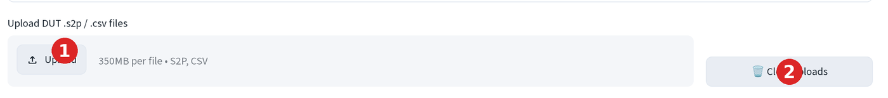
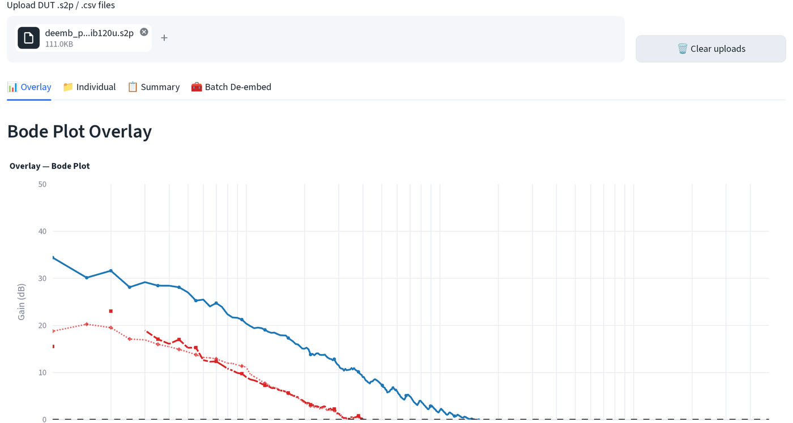
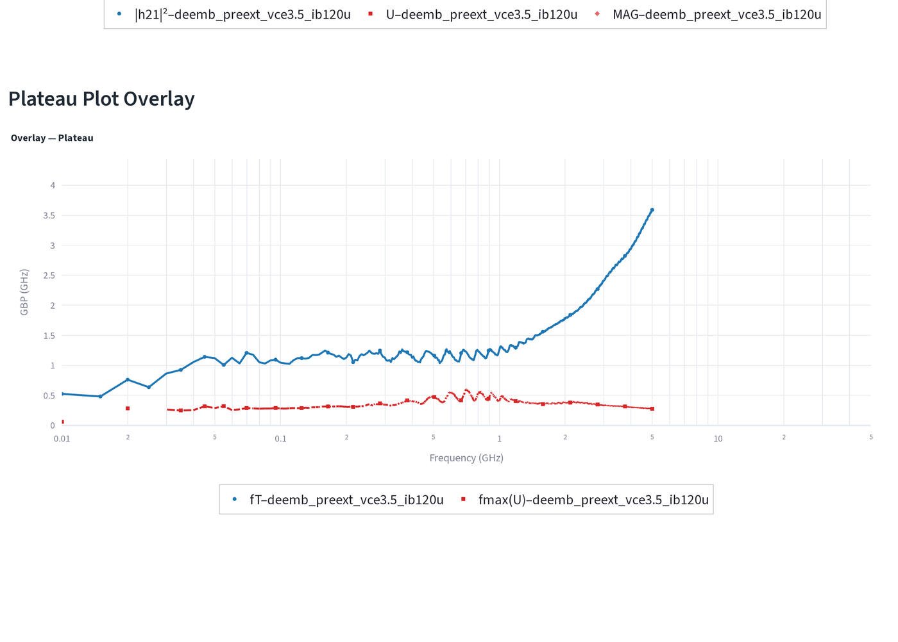
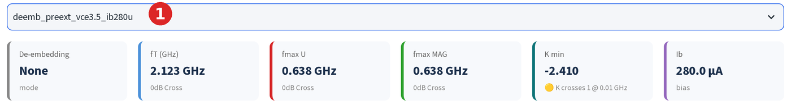
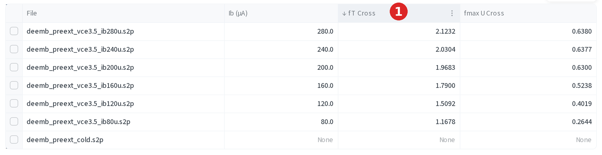
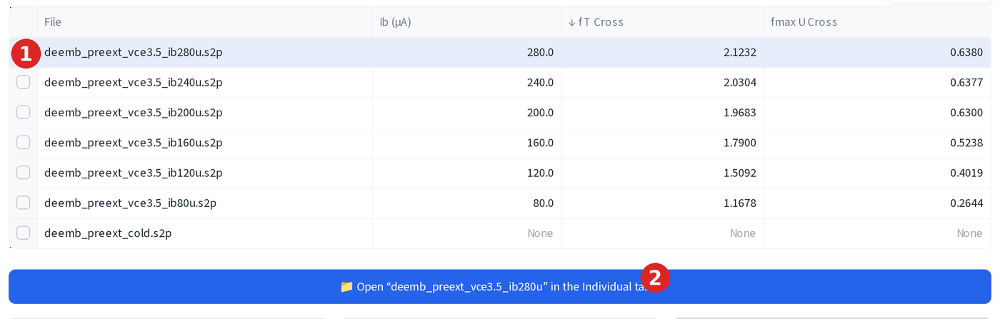
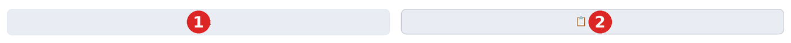
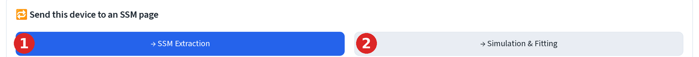

RF 一覽¶
批次上傳元件、去嵌入，並一次讀出 fT/fmax。
上傳¶
- 點選上傳 (Upload)，拖入 DUT 的
.s2p或.csv檔案，每個偏壓點一檔， 一次可放入任意數量。 - 點選清除上傳 (Clear uploads) 移除所有已上傳的檔案，重新開始。

每個檔案會依內容雜湊值，加上目前的去嵌入與圖表視窗設定進行快取，所以重新 執行頁面（拖動滑桿、切換勾選框）時，未變更的檔案不會重新解析。
四個分頁¶
- 疊圖 (Overlay)：將每個已上傳檔案的 Bode 與 Plateau 曲線疊在同一軸上， 方便一眼比較各元件。
- 單一檔案 (Individual)：一次一個檔案，顯示 Bode、Plateau 與 Smith 圖、fT/fmax 指標卡、資料表與匯出功能。
- 摘要 (Summary)：每個檔案一列，列出 fT/fmax，可排序，並可匯出 Excel/ZIP。
- 批次去嵌入 (Batch De-embed)：對每個已上傳檔案套用同一組校準的 Open/Short 去嵌入。另有專頁說明。
疊圖分頁的兩張圖表垂直排列，上方為 Bode（|h21|²、Mason U、MAG/MSG 對頻率），
下方為 Plateau（f × 增益，即同一資料的 GBP 形式）。每個已上傳檔案在兩張
圖上都各自有一組曲線，因此多個偏壓點的掃描可以直接疊圖比較：


fT/fmax 萃取¶
每張指標卡顯示數值以及產生該數值的方法。

應用程式依序嘗試：
- 交越 (0dB Cross)：真正的 0 dB 交越，即增益曲線在跌破 0 dB 之前， 至少連續 10 個點維持在 0 dB 以上。只要存在這種交越，就會顯示此數值。
- 外插 (Extrap & Plat.)：在掃描頻段內找不到交越，但中位增益仍為正值， 於是對最後幾個點做對數線性擬合，並外插到其 0 dB 交越點。
- 平台 (Plateau)：與外插值並列顯示，作為健全性檢查：逐點計算
f × |增益|，對正常運作的元件而言應接近外插所得的 fT/fmax。
無增益 (No Gain) / 無資料 (No Data) 表示曲線在掃描頻段內從未突破
0 dB，這對未偏壓或冷態元件而言是正常現象（見上方卡片：2.123 GHz，方法為
0dB 交越）。
排序與跳至元件¶
在摘要分頁依 fT 或 fmax 為元件排名，再直接在單一檔案分頁開啟想看的那個， 不必從下拉選單重新選取。
-
點選 fT Cross（或任一）欄標題依該欄排序，再次點選則反轉排序方向。

-
點選某列的核取方塊選取該列，再點選出現的藍色在單一檔案分頁開啟「…」→ (Open "…" in the Individual tab →) 按鈕。

匯出¶
摘要分頁可匯出整張表：
- 點選 Excel 取得多工作表活頁簿，一張
Summary工作表加上每個元件各一 張工作表。 - 點選 ZIP (CSV) 取得相同資料的純 CSV 檔案。
- 點選複製 (copy) 將摘要表複製到剪貼簿，方便貼到 Origin。
單一檔案分頁的 Bode 圖下方也有同樣的兩個按鈕（Plateau 與 Smith 圖則不提供 匯出）：

- 點選 xlsx 將繪製的曲線下載為活頁簿。
- 點選複製 (copy) 將同一份資料複製到剪貼簿，直接貼到 Origin，不必下載。
將元件傳送至萃取或模擬頁¶
在單一檔案分頁中，可將目前使用中的元件直接傳送出去，不必重新上傳。

- 點選→ 小訊號模型萃取 (→ SSM Extraction)，開啟已載入此元件 S 參數的 HBT SSM 萃取頁。
- 點選→ 模擬與擬合 (→ Simulation & Fitting)，開啟已載入同一元件的 RF 模擬器以進行擬合。
若此檔案已執行過三步驟或批次去嵌入，會先出現傳送的 S 參數 (S-parameters to send) 選項，可選擇去嵌入後（已移除焊墊/引線，只擬合本質元件）或原始 （連寄生效應一併擬合）。